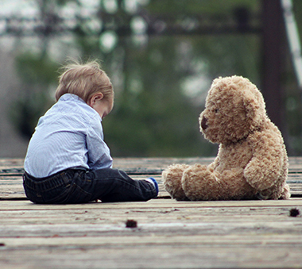
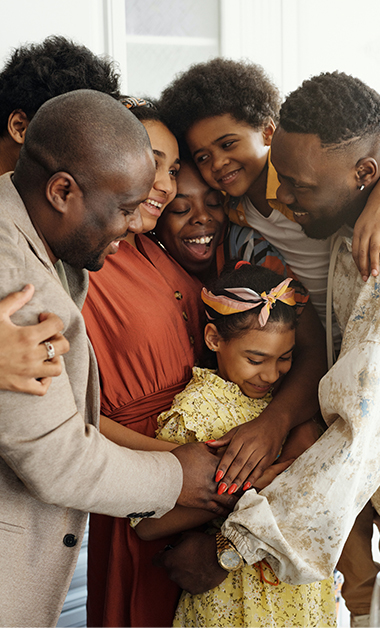

Resources Offered Through Hope For Children Foundation
To Get Immediate Help And Support Call or Click to Visit:
CHILD ABUSE AND NEGLECT US DEPT. HEALTH AND HUMAN SERVICES
National Domestic Violence Hotline at 1-800-799-SAFE (7233)
Training Videos
Resources for effects of domestic violence on children
Childhood exposure to domestic violence may also lead to severe short and long-term consequences, including a higher risk of violent behavior and long-term behavioral, emotional, and psychological symptoms of abuse. Witnessing violence between parents or caretakers is the strongest risk factor of transmitting violent behavior; this is especially true of boys, who are twice as likely to abuse their own partners during adulthood. Of children who have been exposed to violence, 63 percent fare worse in behavioral, academic, and social functioning than those not exposed to domestic violence. Children are also more likely to either internalize behavioral problems, leading to withdrawal, anxiety, and depression, or externalize them, leading to aggression, delinquency, and hyperactivity. Please contact the resources listed above should you know of someone you could potentially help.
Provision of services and resources
To serve the victims of domestic violence, organizations provide two basic types of services: services to address physical and emotional trauma and services to reduce violence by enabling women to leave an abusive relationship. Women who have experienced domestic violence require a crisis hotline to call in an emergency, medical treatment, and social support in the forms of one-on-one and group therapy along with possible other resources which can be revealed by contacting the government entities and organizations listed above. Leaving an abusive relationship can be exceedingly difficult and inadequate services to help women plan for and cope after leaving makes it even more difficult. Communities play a vital role in enabling women to escape violence by offering safe housing, childcare, employment, other resources, and food since victims may not have independent incomes or alternative housing options. Additionally, victims may fear for their and their children’s safety since it is not uncommon for women to be beaten or killed after leaving an abusive partner.
Nonprofits can empower victims to protect themselves from harm by providing information that help women find temporary or permanent shelter, offering financial support and workforce training, and providing legal advocacy.
I cannot thank you enough
- Hope For Children Foundation Board of Directors

